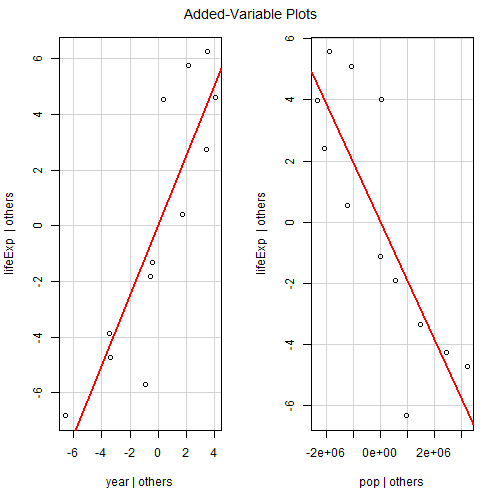
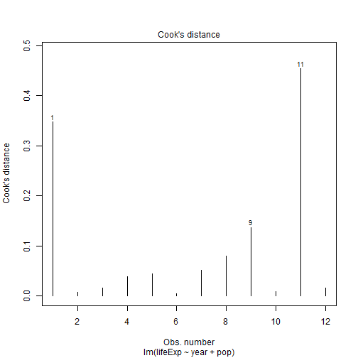
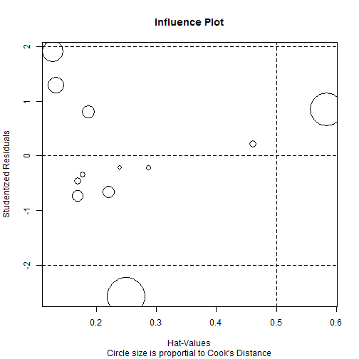

Intro to R Programming for Biostatistics
Day 3 - Regression in R
Adam J Sullivan
by-nc-nd
Regression Models in R
Linear Regression in R
Linear Regression in R
- We can use R to easily fit linear regressions for us.
- This section will explore the basic commands for linear regression as well as how to test assumptions.
- We will not teach linear regression, but only seek to display how R does it.
lm() Function in R
- To fit Linear Regression models in R we use the
lm()function.
lm(formula, data, subset, weights, na.action,
method = "qr", model = TRUE, x = FALSE, y = FALSE, qr = TRUE,
singular.ok = TRUE, contrasts = NULL, offset, ...)
formulais the regressino equation written asy~x1 + x2+ ...datais the dataframe of interest.subsetspecific subset of data.weightsfor weighted data.
Gapminder Data
- Worldwide data source.
- Contains 6 variables
| Variable | Meaning |
|---|---|
| country | Country Name |
| continent | Continent Name |
| year | Year Data Accounts For |
| lifeExp | Life Expectancy at Birth |
| pop | Total Population |
| gdpPercap | per-Capita GDP |
- Per-capita GDP (Gross domestic product) is given in units of international dollars, "a hypothetical unit of currency that has the same purchasing power parity that the U.S. dollar had in the United States at a given point in time" -- 2005, in this case.
Gapminder Data
library(gapminder)
Gapminder Data
## # A tibble: 1,704 x 6
## country continent year lifeExp pop gdpPercap
## <fctr> <fctr> <int> <dbl> <int> <dbl>
## 1 Afghanistan Asia 1952 28.801 8425333 779.4453
## 2 Afghanistan Asia 1957 30.332 9240934 820.8530
## 3 Afghanistan Asia 1962 31.997 10267083 853.1007
## 4 Afghanistan Asia 1967 34.020 11537966 836.1971
## 5 Afghanistan Asia 1972 36.088 13079460 739.9811
## 6 Afghanistan Asia 1977 38.438 14880372 786.1134
## 7 Afghanistan Asia 1982 39.854 12881816 978.0114
## 8 Afghanistan Asia 1987 40.822 13867957 852.3959
## 9 Afghanistan Asia 1992 41.674 16317921 649.3414
## 10 Afghanistan Asia 1997 41.763 22227415 635.3414
## # ... with 1,694 more rows
Gapminder Regression
kenya <- gapminder %>% filter(country=="Kenya")
kenya_model <- lm(lifeExp ~ year, data=kenya)
kenya_model
##
## Call:
## lm(formula = lifeExp ~ year, data = kenya)
##
## Coefficients:
## (Intercept) year
## -356.1010 0.2065
Gapminder Regression
- Basic Model Statement does not include much information
- If we look further we can see what type of object is returned:
str(kenya_model)
## List of 12
## $ coefficients : Named num [1:2] -356.101 0.207
## ..- attr(*, "names")= chr [1:2] "(Intercept)" "year"
## $ residuals : Named num [1:12] -4.732 -3.349 -1.118 0.554 2.427 ...
## ..- attr(*, "names")= chr [1:12] "1" "2" "3" "4" ...
## $ effects : Named num [1:12] -182.492 12.347 0.283 1.805 3.527 ...
## ..- attr(*, "names")= chr [1:12] "(Intercept)" "year" "" "" ...
## $ rank : int 2
## $ fitted.values: Named num [1:12] 47 48 49.1 50.1 51.1 ...
## ..- attr(*, "names")= chr [1:12] "1" "2" "3" "4" ...
## $ assign : int [1:2] 0 1
## $ qr :List of 5
## ..$ qr : num [1:12, 1:2] -3.464 0.289 0.289 0.289 0.289 ...
## .. ..- attr(*, "dimnames")=List of 2
## .. .. ..$ : chr [1:12] "1" "2" "3" "4" ...
## .. .. ..$ : chr [1:2] "(Intercept)" "year"
## .. ..- attr(*, "assign")= int [1:2] 0 1
## ..$ qraux: num [1:2] 1.29 1.27
## ..$ pivot: int [1:2] 1 2
## ..$ tol : num 1e-07
## ..$ rank : int 2
## ..- attr(*, "class")= chr "qr"
## $ df.residual : int 10
## $ xlevels : Named list()
## $ call : language lm(formula = lifeExp ~ year, data = kenya)
## $ terms :Classes 'terms', 'formula' language lifeExp ~ year
## .. ..- attr(*, "variables")= language list(lifeExp, year)
## .. ..- attr(*, "factors")= int [1:2, 1] 0 1
## .. .. ..- attr(*, "dimnames")=List of 2
## .. .. .. ..$ : chr [1:2] "lifeExp" "year"
## .. .. .. ..$ : chr "year"
## .. ..- attr(*, "term.labels")= chr "year"
## .. ..- attr(*, "order")= int 1
## .. ..- attr(*, "intercept")= int 1
## .. ..- attr(*, "response")= int 1
## .. ..- attr(*, ".Environment")=<environment: R_GlobalEnv>
## .. ..- attr(*, "predvars")= language list(lifeExp, year)
## .. ..- attr(*, "dataClasses")= Named chr [1:2] "numeric" "numeric"
## .. .. ..- attr(*, "names")= chr [1:2] "lifeExp" "year"
## $ model :'data.frame': 12 obs. of 2 variables:
## ..$ lifeExp: num [1:12] 42.3 44.7 47.9 50.7 53.6 ...
## ..$ year : int [1:12] 1952 1957 1962 1967 1972 1977 1982 1987 1992 1997 ...
## ..- attr(*, "terms")=Classes 'terms', 'formula' language lifeExp ~ year
## .. .. ..- attr(*, "variables")= language list(lifeExp, year)
## .. .. ..- attr(*, "factors")= int [1:2, 1] 0 1
## .. .. .. ..- attr(*, "dimnames")=List of 2
## .. .. .. .. ..$ : chr [1:2] "lifeExp" "year"
## .. .. .. .. ..$ : chr "year"
## .. .. ..- attr(*, "term.labels")= chr "year"
## .. .. ..- attr(*, "order")= int 1
## .. .. ..- attr(*, "intercept")= int 1
## .. .. ..- attr(*, "response")= int 1
## .. .. ..- attr(*, ".Environment")=<environment: R_GlobalEnv>
## .. .. ..- attr(*, "predvars")= language list(lifeExp, year)
## .. .. ..- attr(*, "dataClasses")= Named chr [1:2] "numeric" "numeric"
## .. .. .. ..- attr(*, "names")= chr [1:2] "lifeExp" "year"
## - attr(*, "class")= chr "lm"
Gapminder Regression
- We see that this is a list
- We can find out what is contained in a list by using the
names()function.
names(kenya_model)
## [1] "coefficients" "residuals" "effects" "rank"
## [5] "fitted.values" "assign" "qr" "df.residual"
## [9] "xlevels" "call" "terms" "model"
Gapminder Regression
- We see different values that are listed here.
- Lets look at the coefficients
kenya_model$coefficients
## (Intercept) year
## -356.1009769 0.2065077
Gapminder Regression
- We can use other commands on a regression
- For example we can use the
summary()function:
summary(kenya_model)
Gapminder Regression
##
## Call:
## lm(formula = lifeExp ~ year, data = kenya)
##
## Residuals:
## Min 1Q Median 3Q Max
## -6.3354 -3.5739 -0.2819 3.9984 5.5687
##
## Coefficients:
## Estimate Std. Error t value Pr(>|t|)
## (Intercept) -356.10098 145.08537 -2.454 0.0340 *
## year 0.20651 0.07329 2.818 0.0182 *
## ---
## Signif. codes: 0 '***' 0.001 '**' 0.01 '*' 0.05 '.' 0.1 ' ' 1
##
## Residual standard error: 4.382 on 10 degrees of freedom
## Multiple R-squared: 0.4426, Adjusted R-squared: 0.3868
## F-statistic: 7.939 on 1 and 10 DF, p-value: 0.01823
Gapminder Regression
kenya_summary <- summary(kenya_model)
names(kenya_summary)
Other Regression Functions
- Other useful functions are listed below:
- coefficients(kenya_model) # model coefficients
- confint(kenya_model, level=0.95) # CIs for model parameters
- fitted(kenya_model) # predicted values
- residuals(kenya_model) # residuals
- anova(kenya_model) # anova table
- vcov(kenya_model) # covariance matrix for model parameters
- influence(kenya_model) # regression diagnostics
Diagnostic Model Plots
par(mfrow=c(2,2)) # optional 4 graphs/page
plot(kenya_model)
Diagnostic Model Plots

Comparing Models
- We can compare nested models using the
anova()function.
kenya_model2 <- lm(lifeExp ~ year + pop, data=kenya)
anova(kenya_model, kenya_model2)
## Analysis of Variance Table
##
## Model 1: lifeExp ~ year
## Model 2: lifeExp ~ year + pop
## Res.Df RSS Df Sum of Sq F Pr(>F)
## 1 10 192.035
## 2 9 60.125 1 131.91 19.745 0.001615 **
## ---
## Signif. codes: 0 '***' 0.001 '**' 0.01 '*' 0.05 '.' 0.1 ' ' 1
broom Package: Easier to View Results
- There is a package called
broomwhich makes results of regressions easier to view and compare. - We will call this package and use the
tidy()andglance()functions.
library(broom)
tidy(kenya_model)
glance(kenya_model)
broom Package: Easier to View Results
## term estimate std.error statistic p.value
## 1 (Intercept) -356.1009769 145.08537018 -2.454424 0.03399941
## 2 year 0.2065077 0.07329116 2.817634 0.01823454
## r.squared adj.r.squared sigma statistic p.value df logLik
## 1 0.4425573 0.386813 4.382174 7.939063 0.01823454 2 -33.66387
## AIC BIC deviance df.residual
## 1 73.32775 74.78247 192.0345 10
broom Package: Easier to View Results
- We can also compare multiple models at the same time
- Using the commands we learned in data cleaning:
tidy1 <- tidy(kenya_model)
tidy2 <- tidy(kenya_model2)
bind_rows(tidy1, tidy2)
broom Package: Easier to View Results
- We can also compare multiple models at the same time
- Using the commands we learned in data cleaning:
## term estimate std.error statistic p.value
## 1 (Intercept) -3.561010e+02 1.450854e+02 -2.454424 0.0339994120
## 2 year 2.065077e-01 7.329116e-02 2.817634 0.0182345440
## 3 (Intercept) -2.386902e+03 4.649642e+02 -5.133518 0.0006166503
## 4 year 1.250069e+00 2.387936e-01 5.234934 0.0005383790
## 5 pop -1.918461e-06 4.317401e-07 -4.443555 0.0016151708
broom Package: Easier to View Results
- Again for
glance()
glance1 <- glance(kenya_model)
glance2 <- glance(kenya_model2)
bind_rows(glance1, glance2)
broom Package: Easier to View Results
## r.squared adj.r.squared sigma statistic p.value df logLik
## 1 0.4425573 0.3868130 4.382174 7.939063 0.0182345440 2 -33.66387
## 2 0.8254669 0.7866818 2.584682 21.283081 0.0003876588 3 -26.69640
## AIC BIC deviance df.residual
## 1 73.32775 74.78247 192.03450 10
## 2 61.39280 63.33243 60.12522 9
Variable Selection: Stepwise Regression
library(MASS)
fit <- lm(lifeExp~year +pop + gdpPercap,data=mydata)
step <- stepAIC(fit, direction="both")
step$anova # display results
More Detailed Regression Diagnostics
- We can see more regression diagnostics using the
carpackage - With this package we have the following functions
More Detailed Regression Diagnostics: Outliers
library(car)
outlierTest(kenya_model2) # Bonferonni p-value for most extreme obs
qqPlot(kenya_model2, main="QQ Plot") #qq plot for studentized resid
leveragePlots(kenya_model2) # leverage plots
More Detailed Regression Diagnostics: Outliers
outlierTest(kenya_model2) # Bonferonni p-value for most extreme obs
##
## No Studentized residuals with Bonferonni p < 0.05
## Largest |rstudent|:
## rstudent unadjusted p-value Bonferonni p
## 11 -2.582753 0.032477 0.38972
More Detailed Regression Diagnostics: Outliers
qqPlot(kenya_model2, main="QQ Plot") #qq plot for studentized resid

More Detailed Regression Diagnostics: Outliers
leveragePlots(kenya_model2) # leverage plots

More Detailed Regression Diagnostics: Influential Observations
# Influential Observations
# added variable plots
av.plots(kenya_model2)
# Cook's D plot
# identify D values > 4/(n-k-1)
cutoff <- 4/((nrow(kenya)-length(kenya_model2$coefficients)-2))
plot(kenya_model2, which=4, cook.levels=cutoff)
# Influence Plot
influencePlot(kenya_model2, id.method="identify", main="Influence Plot", sub="Circle size is proportial to Cook's Distance" )
More Detailed Regression Diagnostics: Influential Observations

More Detailed Regression Diagnostics: Influential Observations

More Detailed Regression Diagnostics: Influential Observations

More Detailed Regression Diagnostics: Normality
# Normality of Residuals
# qq plot for studentized resid
qqPlot(kenya_model2, main="QQ Plot")
# distribution of studentized residuals
library(MASS)
sresid <- studres(kenya_model2)
hist(sresid, freq=FALSE,
main="Distribution of Studentized Residuals")
xfit<-seq(min(sresid),max(sresid),length=40)
yfit<-dnorm(xfit)
lines(xfit, yfit)
More Detailed Regression Diagnostics: Normality

More Detailed Regression Diagnostics: Normality

More Detailed Regression Diagnostics: Error Variance
# Evaluate homoscedasticity
# non-constant error variance test
ncvTest(kenya_model2)
# plot studentized residuals vs. fitted values
spreadLevelPlot(kenya_model2)
More Detailed Regression Diagnostics: Error Variance
## Non-constant Variance Score Test
## Variance formula: ~ fitted.values
## Chisquare = 1.111634 Df = 1 p = 0.2917271
More Detailed Regression Diagnostics: Multi-collinearity
# Evaluate Collinearity
vif(kenya_model2) # variance inflation factors
## year pop
## 30.51456 30.51456
sqrt(vif(kenya_model2)) > 2 # problem?
## year pop
## TRUE TRUE
More Detailed Regression Diagnostics: Linearity
# Evaluate Nonlinearity
# component + residual plot
crPlots(kenya_model2)
More Detailed Regression Diagnostics: Linearity
## Error in formula(model): object 'fit' not found
More Detailed Regression Diagnostics: Autocorrelation
# Test for Autocorrelated Errors
durbinWatsonTest(kenya_model2)
## lag Autocorrelation D-W Statistic p-value
## 1 0.3478423 1.266646 0.028
## Alternative hypothesis: rho != 0
More Detailed Regression Diagnostics: Multiple Tests
- We can use one more package to help us with regression diagnostics
- This is the
gvlmapackage.
library(gvlma)
More Detailed Regression Diagnostics: Multiple Tests
gvlma(kenya_model)
##
## Call:
## lm(formula = lifeExp ~ year, data = kenya)
##
## Coefficients:
## (Intercept) year
## -356.1010 0.2065
##
##
## ASSESSMENT OF THE LINEAR MODEL ASSUMPTIONS
## USING THE GLOBAL TEST ON 4 DEGREES-OF-FREEDOM:
## Level of Significance = 0.05
##
## Call:
## gvlma(x = kenya_model)
##
## Value p-value Decision
## Global Stat 11.318796 0.023205 Assumptions NOT satisfied!
## Skewness 0.003812 0.950772 Assumptions acceptable.
## Kurtosis 1.047202 0.306152 Assumptions acceptable.
## Link Function 9.764485 0.001779 Assumptions NOT satisfied!
## Heteroscedasticity 0.503297 0.478055 Assumptions acceptable.
More Detailed Regression Diagnostics: Multiple Tests
gvlma(kenya_model2)
##
## Call:
## lm(formula = lifeExp ~ year + pop, data = kenya)
##
## Coefficients:
## (Intercept) year pop
## -2.387e+03 1.250e+00 -1.918e-06
##
##
## ASSESSMENT OF THE LINEAR MODEL ASSUMPTIONS
## USING THE GLOBAL TEST ON 4 DEGREES-OF-FREEDOM:
## Level of Significance = 0.05
##
## Call:
## gvlma(x = kenya_model2)
##
## Value p-value Decision
## Global Stat 3.827e+00 0.4300 Assumptions acceptable.
## Skewness 3.116e-05 0.9955 Assumptions acceptable.
## Kurtosis 4.884e-02 0.8251 Assumptions acceptable.
## Link Function 1.643e+00 0.1999 Assumptions acceptable.
## Heteroscedasticity 2.134e+00 0.1440 Assumptions acceptable.
Generallized Linear Models in R
Generalized Linear Models in R
- Generalized linear models are fit using the
glm()function. - The form of the glm function is
glm(formula, family=familytype(link=linkfunction), data=)
Link Functions
| Family | Default Link Function |
|---|---|
| binomial | (link = "logit") |
| gaussian | (link = "identity") |
| Gamma | (link = "inverse") |
| inverse.gaussian | (link = "1/mu2") |
| poisson | (link = "log") |
| quasi | (link = "identity", variance = "constant") |
| quasibinomial | (link = "logit") |
| quasipoisson | (link = "log") |
Further GLM Help
- See
help(glm)for other modeling options. - See
help(family)for other allowable link functions for each family. - Two subtypes of generalized linear models will be covered here:
- logistic regression
- poisson regression
Logistic Regression
- Logistic regression is useful when you are predicting a binary outcome from a set of continuous predictor variables.
- It is frequently preferred over discriminant function analysis because of its less restrictive assumptions.
Fitting Logistic Regression
fit <- glm(F~x1+x2+x3,data=mydata,family=binomial(link="logit"))
summary(fit) # display results
confint(fit) # 95% CI for the coefficients
exp(coef(fit)) # exponentiated coefficients
exp(confint(fit)) # 95% CI for exponentiated coefficients
predict(fit, type="response") # predicted values
residuals(fit, type="deviance") # residuals
Comparing Nested Logistic Models
- You can use
anova(fit1,fit2, test="Chisq")to compare nested models. - Additionally,
cdplot(F~x, data=mydata)will display the conditional density plot of the binary outcome F on the continuous x variable.
Testing Logistic Regression Models
- We usually determine the goodness of fit for logistic regression based on
- Calibration - A model is well calibrated if the observed and predicted probabilities based on the model are reasonably close.
- Discrimination - A model has good discrimination if the distribution of risk scores for cases and controls separate out. a. This means Cases tend to have higher scores. b. This means Controls tend to have lower scores. c. There is little overlap.
Calibration: Hosmere-Lemeshew Test
library(ResourceSelection))
# data$outcome is a binary outcome variable
# your_model is the saved version of your logistic regression
# g = 10 is the number of groups for hosmere lemeshew
hoslem.test(data$outcome, fitted(your_model), g=10)
Discrimination: C-Statistic
- We then assess discrimination.
- To do this we use something called Concordance or C Statistic
- To understand what this is consider 2 different subjects
- Subject 1 is dead
- Subject 2 is not dead.
- If we consider our model from above it predicts:
- \(\hat{p}_1\) the proability that subject 1 is dead.
- \(\hat{p}_2\) the proability that subject 2 is dead.
Discrimination: C-Statistic
- The C Statistic is given by
\[\Pr\left(\hat{p}_1 > \hat{p}_2\right)\]
- If the risk prediction is worthless we find that \(C=0.5\) or essentially the same as flipping a coin.
- If the risk is larger for all who are dead than all who are not dead than we have \(C=1\).
- We typically find this value with a Receiver Operating Characteristic (ROC) curve.
Discrimination: ROC Curve
- Pre-Work for Graph
library(ggplot2)
library(ROCR)
# Replace model with your model
# replace data$outcome with your data and outcome
# run this as is
prob <- predict(model)
pred <- prediction(prob, data$outcome)
perf <- performance(pred, "tpr", "fpr")
# I know, the following code is bizarre. Just go with it.
auc <- performance(pred, measure = "auc")
auc <- auc@y.values[[1]]
Discrimination: ROC Curve
- Graph
roc.data <- data.frame(fpr=unlist(perf@x.values),
tpr=unlist(perf@y.values),
model="GLM")
ggplot(roc.data, aes(x=fpr, ymin=0, ymax=tpr)) +
geom_ribbon(alpha=0.2) + geom_abline(intercept = 0, slope = 1, colour = "gray")+
geom_line(aes(y=tpr)) +
ggtitle(paste0("ROC Curve w/ AUC=", auc))
Poisson Regression
- Poisson regression is useful when predicting an outcome variable representing counts from a set of continuous predictor variables.
Poisson Regression in R
# where count is a count and
# x1-x3 are continuous predictors
fit <- glm(count ~ x1+x2+x3, data=mydata, family=poisson(link="log"))
summary(fit) display results
Poisson Regression with Overdispersion
- If you have overdispersion you may want to use
quasipoisson()instead ofpoisson().